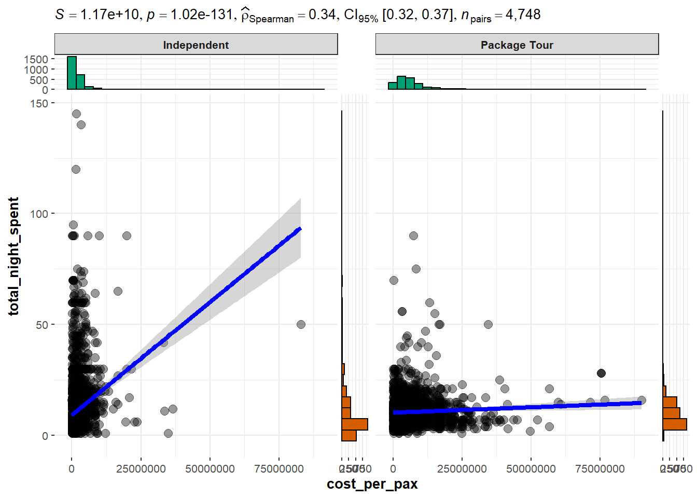
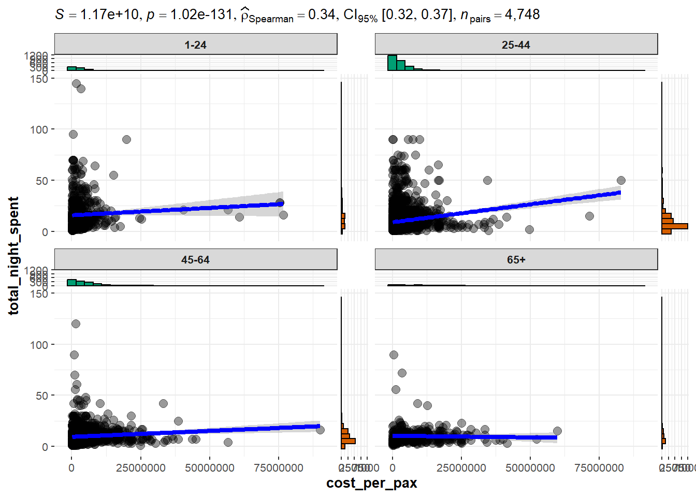
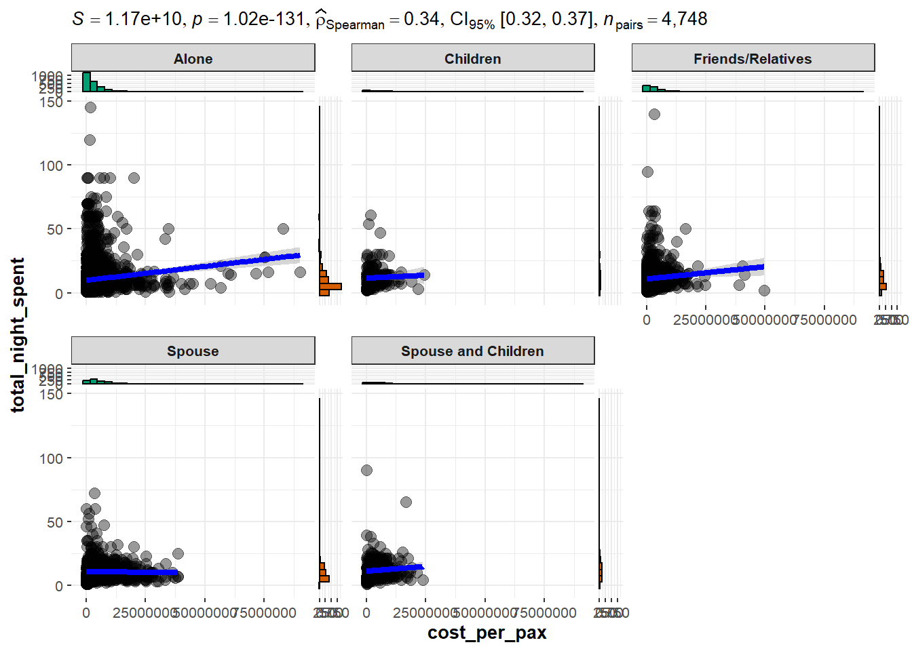
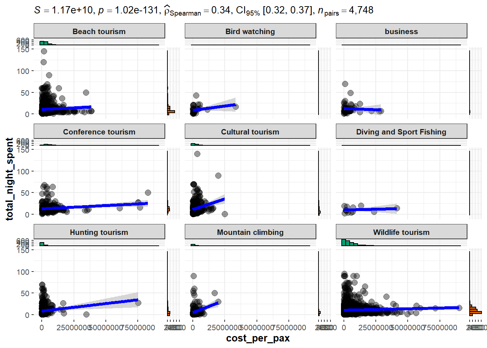
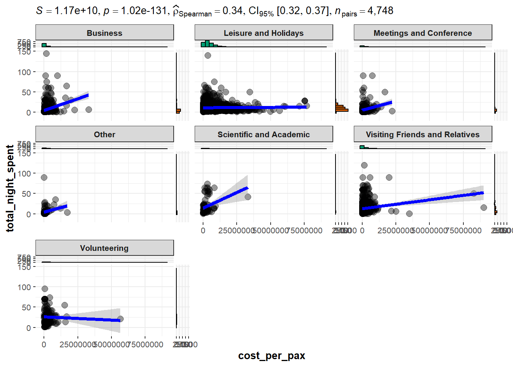
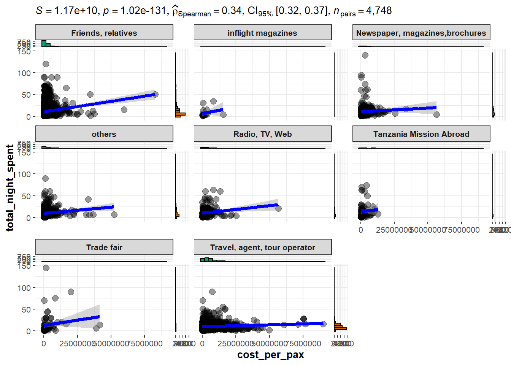

pacman::p_load("ggstatsplot", "plotly", "DT", "scales","tidyverse")Exploratory Data Analysis
2. Loading the data
touristdata_clean <- read_csv("data/touristdata_clean.csv")
touristdata_clean <- touristdata_clean %>%
filter(total_cost > 0,
total_tourist > 0,
total_night_spent > 0) %>%
mutate(cost_per_pax = round(total_cost/total_tourist,0),
cost_per_night = round(total_cost/total_night_spent,0),
cost_per_pax_night = round(total_cost/total_tourist/total_night_spent,0))3. Correlation
options(scipen = 999)
plotcorrelation_costppvtn <- function (a) {
ggscatterstats(data = touristdata_clean,
x = cost_per_pax, y = total_night_spent,
type = "nonparametic") + facet_wrap(vars(!!sym(a)))
}
plotcorrelation_costppvtn ("tour_arrangement")
plotcorrelation_costppvtn ("age_group")
plotcorrelation_costppvtn ("travel_with")
plotcorrelation_costppvtn ("main_activity")
plotcorrelation_costppvtn ("purpose")
plotcorrelation_costppvtn ("info_source")
4. Country comparision
options(scipen = 999)
p1 <- ggplot(data = touristdata_clean %>% filter(country == "GERMANY") %>% group_by(tour_arrangement),
aes(y = total_cost, x = age_group)) +
geom_boxplot(aes(fill = tour_arrangement)) +
scale_fill_brewer(palette="YlGnBu") +
theme(axis.text.x = element_text(angle = 45, vjust = 1, hjust=1)) +
scale_y_continuous(labels = comma)
p1 %>%
ggplotly() %>%
layout(boxmode = "group")